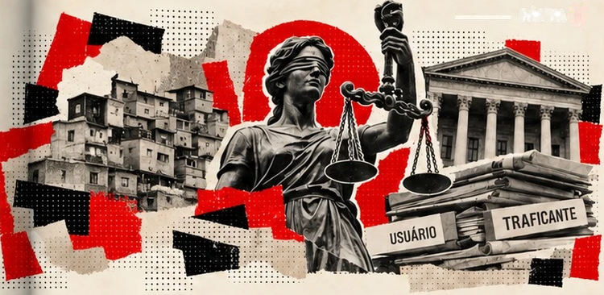
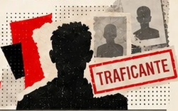
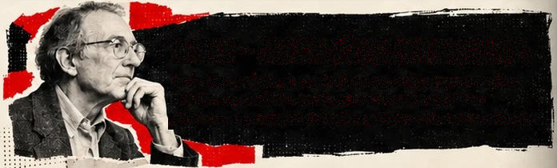

SOB EFEITO
PÁGINA 11
QUEM USA, QUEM É CLASSIFICADO, QUEM É PUNIDO?
Três estudos. Três etapas diferentes.
1 — QUEM APARECE NOS PROCESSOS?
Perfil de processados por tráfico, segundo estudo do Ipea retomado pelo CNPCP:
86%
homens
71,26%
até 30 anos
65,7%
pessoas
negras
68,4%
sem ter cursado
o ensino médio
Esses percentuais não descrevem todos os consumidores de drogas.
2 — QUEM É CLASSIFICADO COMO TRAFICANTE?
Duque, França e Santos analisaram mais de 3,5 milhões
de registros de São Paulo, de 2010 a 2020. Mesmo
considerando características observadas das ocorrências,
o estudo encontrou maior probabilidade de classificação
como traficante entre pessoas pretas ou pardas,
em comparação com brancas.
3 — E NAS DECISÕES JUDICIAIS?
Em estudo com 4.606 réus, o Ipea encontrou associações
entre prisão preventiva, características processuais, drogas,
desvantagem socioeconômica do território e resultados
mais punitivos. A raça não apresentou efeito direto
estatisticamente significativo sobre a sentença nos modelos
examinados. Isso não prova igualdade nas etapas anteriores.
Um sistema não é necessariamente igualitário apenas porque suas regras são gerais. É preciso observar os caminhos que levam às decisões.